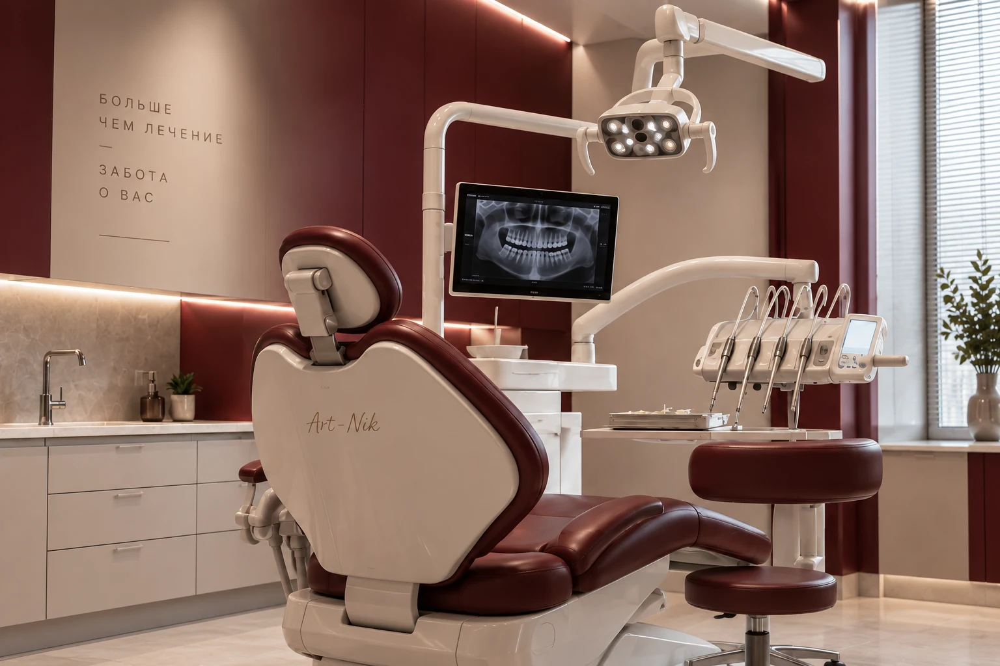

Своя зуботехническая лаборатория
Коронки и виниры делаем без посредников. Техники работают под микроскопом, керамику наносят в несколько слоёв.
Современная стоматология, точная диагностика и забота о вашем комфорте.

Направления клиники
Врачи работают вместе по единому плану — от диагностики до восстановления улыбки.
Лечение кариеса, каналов и дёсен под увеличением.
Под увеличением 02Гигиена Air Flow, полировка и бережное отбеливание.
Air Flow + NSK 03Брекеты и элайнеры для детей и взрослых. Цифровой 3D-план.
Брекеты и элайнеры 04Удаление зубов, включая зубы мудрости.
Удаление зубов 05Имплантация, «всё на 4» и «всё на 6», костная пластика.
Варианты имплантации 06Коронки и виниры из собственной лаборатории.
Коронки и виниры 07Реставрация с естественной формой и оттенком зубов.
Эстетика улыбки 08Осмотр, фотопротокол и 3D-снимки по показаниям.
План лечения.webp)
О клинике
Название клиники — от первых букв имён сыновей основателей: стоматолога-ортопеда Элины Заманапуло и зубного техника Сергея Макаренко. В 14 лет Элина потеряла передние зубы — и это привело её в стоматологию.
Почему «Арт-Ник»
Клиника спроектирована так, чтобы приём проходил спокойно и предсказуемо — от диагностики до готовой работы.
Коронки и виниры делаем без посредников. Техники работают под микроскопом, керамику наносят в несколько слоёв.
Бинокулярные лупы и увеличение: врач точно видит границы кариеса, микротрещины и каналы.
Стоматологические установки A-dec (США) и японские аппараты Air Flow NSK для профессиональной гигиены.
Внутриротовой сканер вместо слепочной массы — комфортно, если есть выраженный рвотный рефлекс.
Красивую и функциональную временную коронку изготавливаем прямо на приёме — без зубов вы не ходите.
Кресло премиум-класса, персональный телевизор с беспроводными наушниками, лечение под коффердамом.
Лечение в деталях
Живые кадры с приёмов и примеры работ врачей клиники. Результат лечения всегда индивидуален и зависит от исходной ситуации.
.webp)
.webp)
.webp)
Приём, консультация и работа врачей клиники
.webp)
.webp)
.webp)
.webp)
Примеры лечения: результаты до и после
Пространство
Белые стены и мрамор, бордовые панели, тёплый свет. Кабинеты — с креслами премиум-класса и потолочными телевизорами.
Перед лечением
Не знаете, с чего начать? Есть вопросы по состоянию зубов или вариантам восстановления улыбки? Приходите на консультацию — врач осмотрит и составит план.
Отзывы
«В клинике спокойно и комфортно, всё подробно объясняют»
Из отзыва на Яндекс КартахМеня внимательно выслушали, подробно ответили на вопросы и объяснили каждый этап. В клинике спокойно и комфортно.
Пациент клиники · Яндекс Карты
Обращалась на профессиональную гигиену. Всё прошло аккуратно и быстро, результатом довольна.
Пациентка клиники · Яндекс Карты
Благодарю за работу с передними зубами. Новые коронки выглядят естественно, а план лечения объяснили понятно.
Пациент клиники · Яндекс Карты
Удалил зуб быстро и совсем не больно. Врач всё объясняет на понятном языке и не навязывает ненужного.
Пациент клиники · Яндекс Карты
Впечатлила тщательность обследования и внимательное отношение. Так подробно мои зубы ещё не смотрел ни один врач.
Пациентка клиники · Яндекс Карты
Наша команда
Стоматологи-терапевты, ортопед, ортодонт, хирурги и имплантолог. Выберите врача по нужному направлению или уточните запись у администратора.
Главный врач, стоматолог-ортопед
Основатель клиники, опыт более 20 лет. Приём начинают с неё: видит полную картину — состояние зубов, прикус, пропорции улыбки — и составляет пошаговый план.
Стоматолог-ортодонт
Стаж более 13 лет. Брекет-системы разных типов и элайнеры; помогает выровнять зубы и в зрелом возрасте.
Стоматолог-терапевт
Лечение кариеса и корневых каналов, реставрация, профессиональная гигиена.
Стоматолог-хирург
Удаление зубов любой сложности, в том числе зубов мудрости, амбулаторная хирургия.
Стоматолог-хирург, имплантолог
Выпускник КубГМУ, обучение в Литве, стажировка в Израиле. Имплантация всех видов («всё на 4», «всё на 6»), костная пластика, синус-лифтинг. У пациентов — «самый добрый хирург».
Стоматолог-терапевт
Практический опыт 11 лет, учился в КубГМУ и СПбГМУ. Профгигиена, лечение кариеса, эндодонтия, ортопедия.
Стоматолог-терапевт
Лечение зубов и дёсен, профилактика, работа под увеличением.
Профилактика
Пациенты, которые приходят на плановый осмотр и комплексную гигиену раз в полгода, каждый раз получают новую профессиональную зубную щётку в подарок — болезнь проще предупредить, чем лечить.
Первичная консультация стоматолога + комплексная гигиена (УЗ + Air Flow на аппарате NSK) + зубная щётка в подарок.
ЗаписатьсяЧастые вопросы
Позвоните по телефону +7 861 202-61-71 или напишите в WhatsApp — администратор поможет выбрать специалиста и удобное время.
Понедельник — суббота с 10:00 до 20:00, воскресенье — выходной. Адрес: Краснодар, ул. Архитектора Петина, 18/1.
Итоговая стоимость зависит от клинической ситуации — точный план и объём лечения врач составит после осмотра и необходимой диагностики.
Если у вас есть недавние снимки, заключения или сведения о предыдущем лечении, возьмите их с собой. Врач определит, нужны ли дополнительные исследования.
Клиника в Фестивальном микрорайоне Краснодара, в микрорайоне Солнечный, по адресу ул. Архитектора Петина, 18/1. У входа есть пандус, парковочное место доступно для посетителей на инвалидной коляске.
Перед лечением
Расскажите врачу, что вас беспокоит. После осмотра он определит, какая диагностика потребуется, и обсудит с вами план лечения.
Как добраться и записаться
Мы на карте